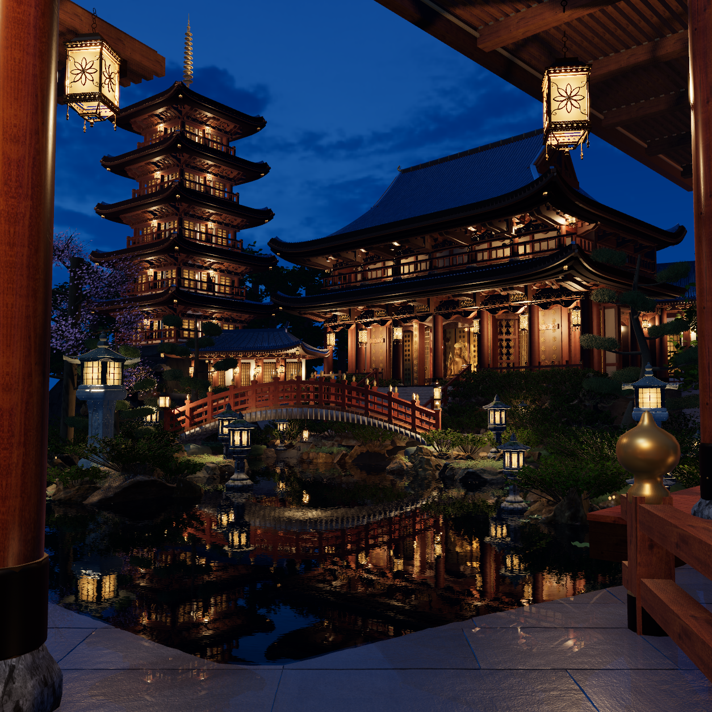
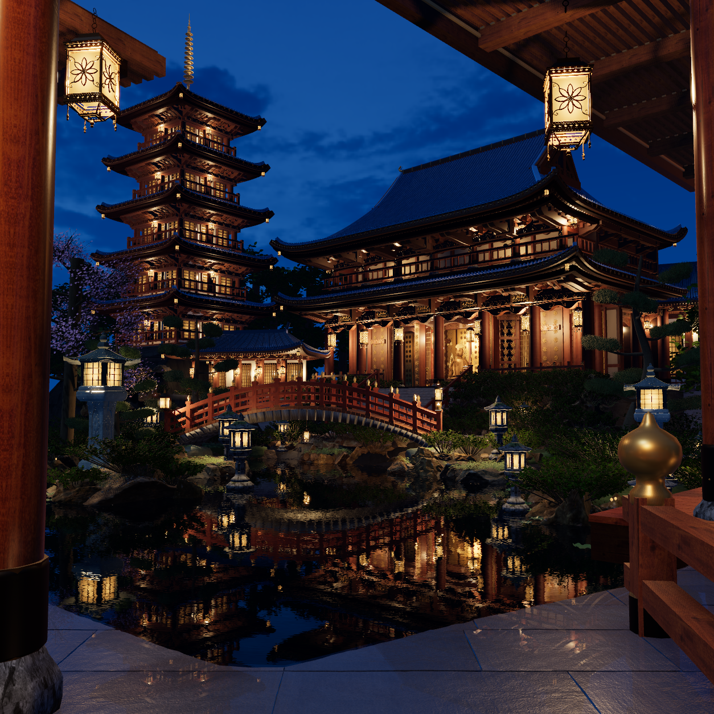
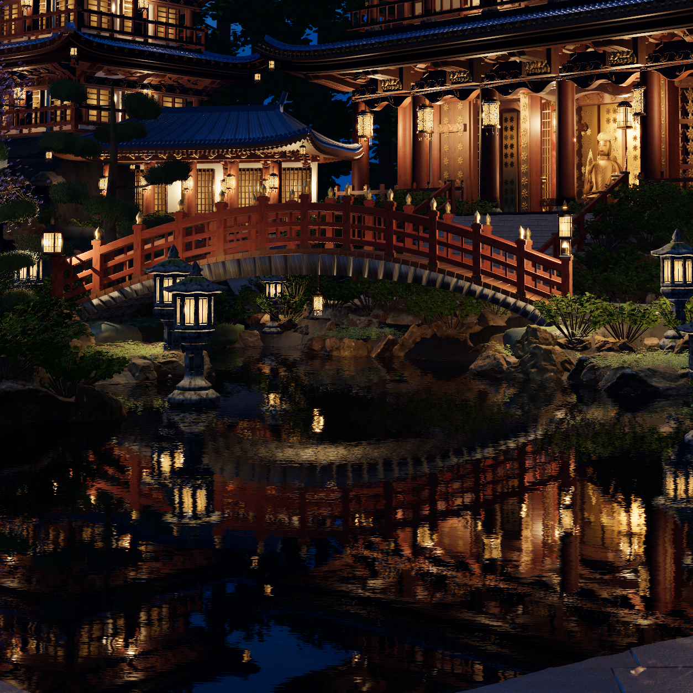
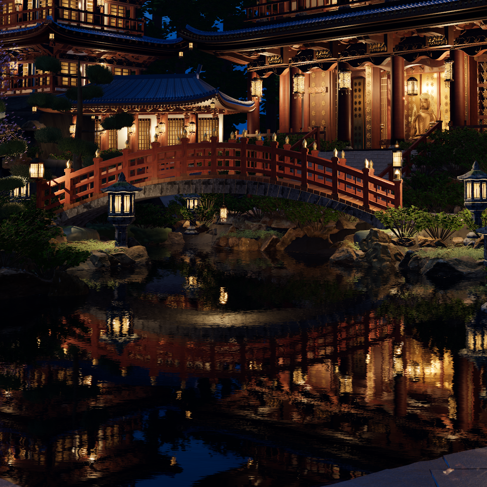
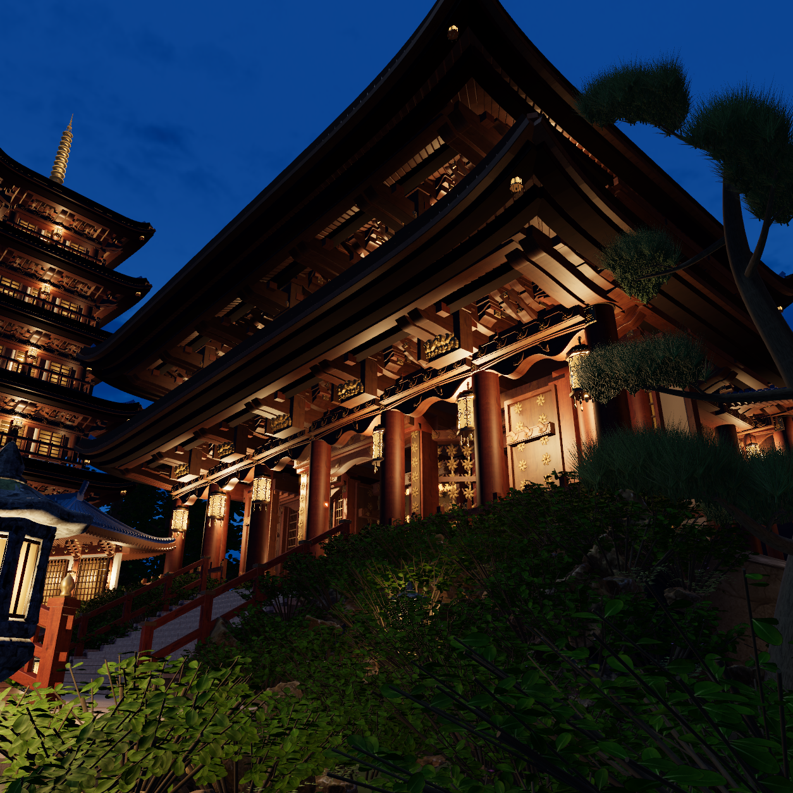
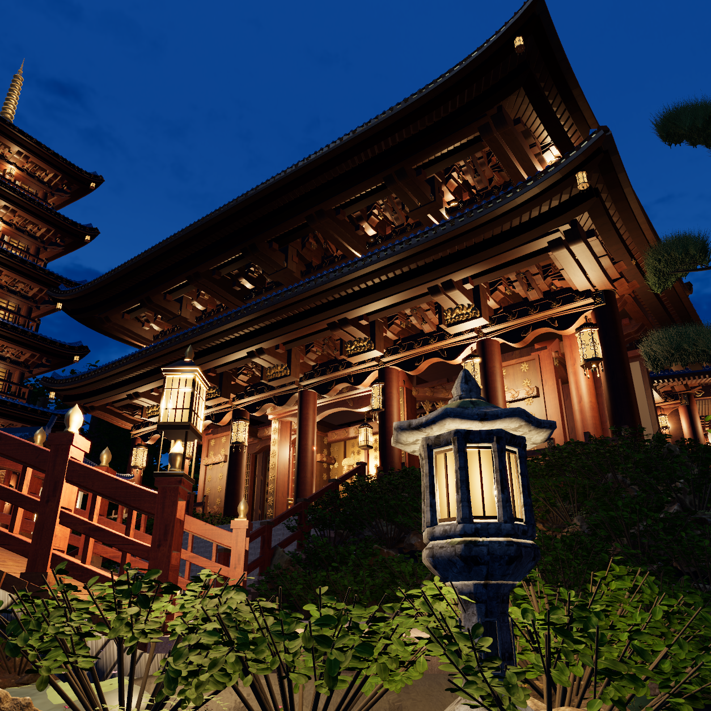
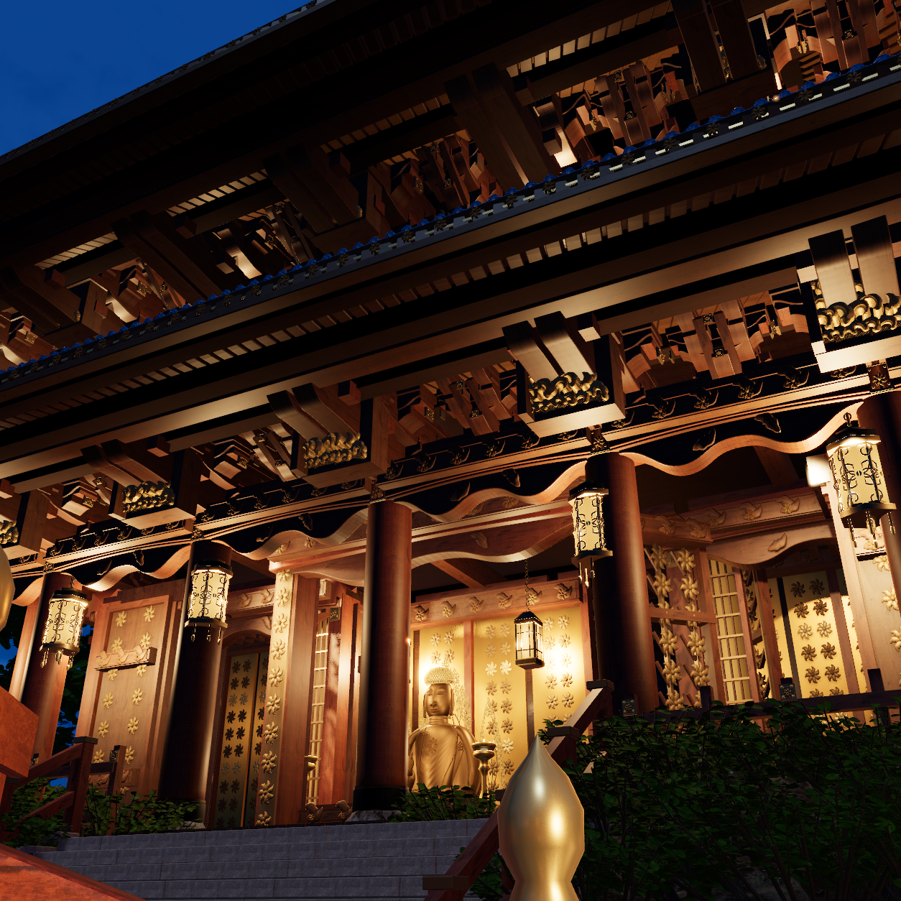
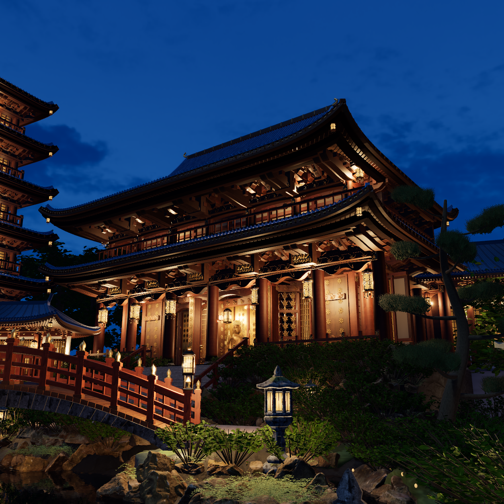
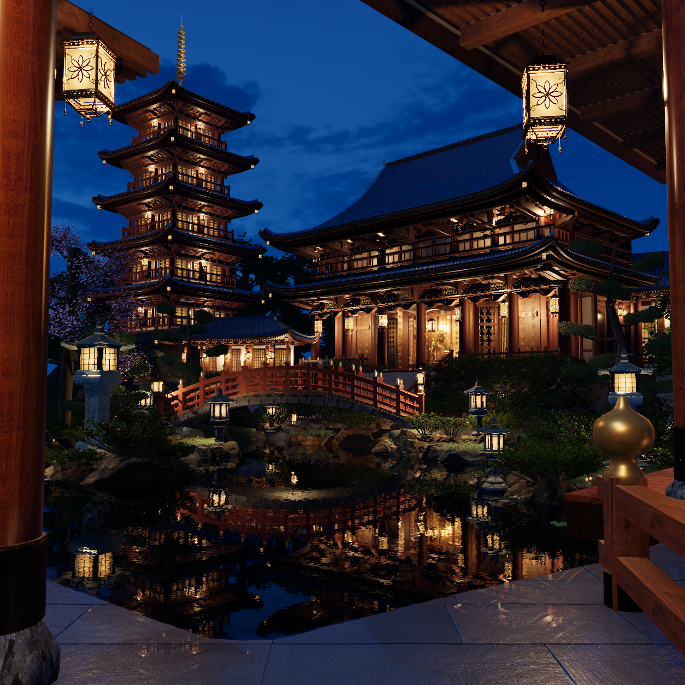

摄影验收 false。 R04 最终源五张官方1254原生机位已全部实看；R14、R01、R02、R03 的原始渲染与失败记录均保留。仍有明确参考差距，摄影验收保持 false。
R04 源码 0897885a14832b746ae6de829ccbcc1386f6eaff0269466ed9a4750b524915f8 · 87 inputs · 曝光仍为 .95。参考照片仅用于比较，未作为模型表面或替代帧。









本轮使用同一官方 FIFO 任务输出。比较全图调用已有 renderShot(-1330) → renderReference API，其余为实际镜头时间；全为1254原生图。五张已实际审图，原生完整性通过，摄影验收仍为 false。


R04 完整输入身份 · R04 源码快照 · R04 几何与面 UV · R04 关键越栏源路径净空 · 保留的 R03 穿柱帽证据
R04 最终实看记录与未达标处 · R04 精确源码／像素／几何边界
R03 完整输入身份 · R03 紧凑源码快照 · 封闭几何与 UV 检查 · R02 的 5,872 个退化 UV 三角形 · R01 实看记录 · R02 实看记录
新增部件均为真实三维实体。灯光保留有限原生近似：纸窗锥形光源与有限点光脚印近似面发光；部分次级灯没有完整几何阴影；固定 SH 场近似一次间接光。上述离散原生机位不等于完整七秒视频或摄影匹配验收。